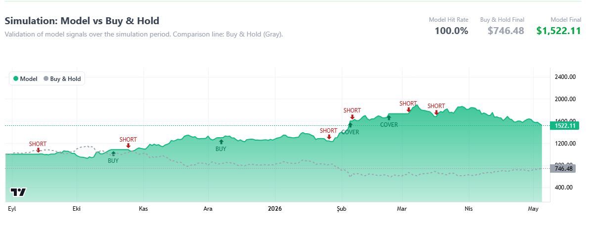
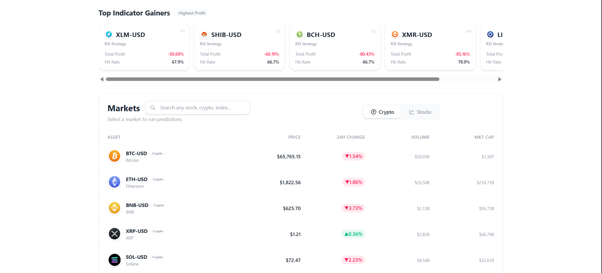
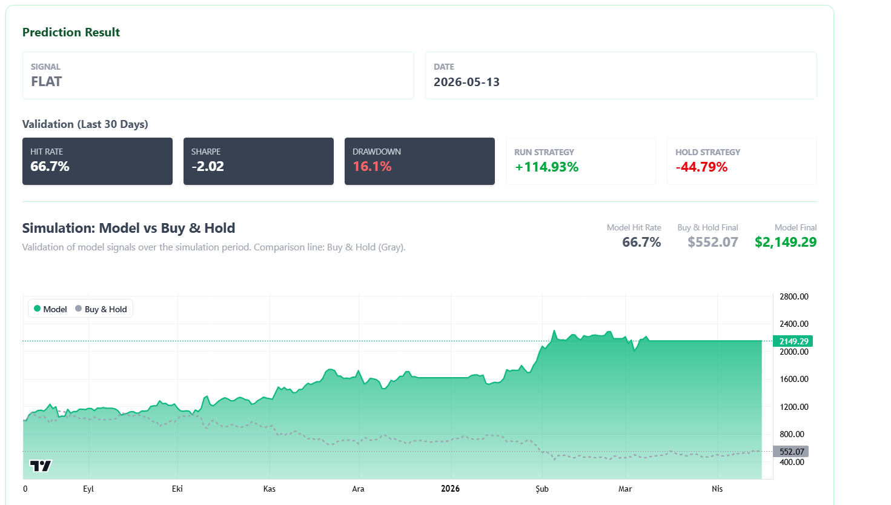
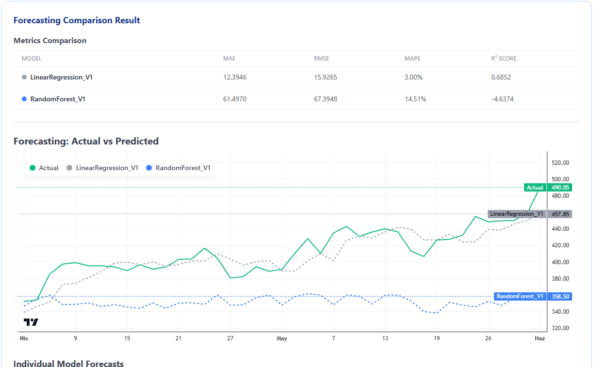
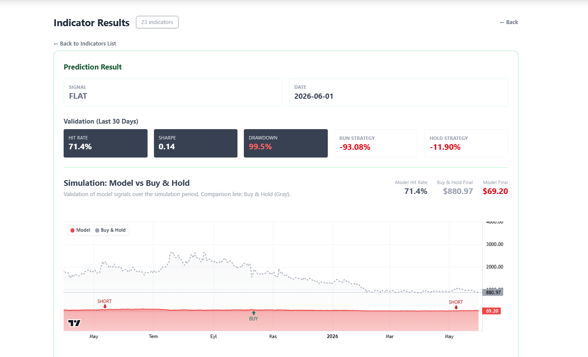

FinApp is a full-stack financial analytics platform that combines forecasting models, technical indicator strategies, and reinforcement-learning trading agents. It helps users run transparent backtests, compare alternative strategies, and evaluate model behavior on real market data.
Financial AI experiments often remain inside isolated notebooks. FinApp turns this workflow into an interactive web platform by connecting market data retrieval, feature engineering, asynchronous model execution, backtesting, result storage, and visualization in a single system.
FinApp follows a clean, modular architecture separating data acquisition, model execution, result storage, and visualization.
FinApp includes forecasting baselines, attention-enhanced sequence models, reinforcement-learning strategies, hybrid experimental models, and rule-based technical indicators under a common evaluation workflow.
Linear regression and random forest models estimate next-period closing prices. These transparent baselines are computationally cheap and easy to debug.
LSTM-based forecasting models process rolling OHLCV-derived sequences to capture non-linear temporal patterns in market data and provide a stronger sequence-modeling baseline.
Attention-based LSTM variants model temporal dependencies, while the advanced K-step model uses a CNN–Transformer structure to combine local pattern extraction with longer-range sequence modeling.
The platform also includes an experimental LSTM + PPO hybrid variant, where supervised sequence predictions are combined with reinforcement-learning-based position sizing.
PPO, A2C, and DDPG agents act directly in a trading environment that includes transaction costs, position state, unrealized P&L, and stop-loss logic.
Multiple RL agents are trained in parallel and evaluated. The best-performing agent is selected for the next test interval via walk-forward evaluation.
RSI, EMA crossover, and MACD strategies provide interpretable rule-based baselines. They are especially useful for batch screening and for comparing learned models against simple trading rules.
K-step models estimate the maximum potential upside over a future window instead of predicting only the next closing price. The advanced variant combines sequence modeling with reinforcement-learning-based trading logic.
Register, sign in, and manage your profile. All model features and prediction history are protected and user-scoped.
Explore instruments from Crypto, BIST 100, NASDAQ, S&P 500, and Dow Jones markets within a single unified interface.
Full candlestick charts with selectable time periods, trade entry/exit markers, and technical indicator overlays.
Submit expensive model runs without freezing the UI. Jobs queue and process in the background, with push notifications on completion.
Run multiple strategies on the same instrument and period, then compare equity curves and metrics side by side.
Scheduled batch analysis evaluates instruments across selected models and indicators, then surfaces promising candidates for further inspection. These results are intended for analysis and comparison, not direct investment advice.





FinApp is an educational and experimental research prototype. Historical backtesting results do not guarantee future market performance, and the platform should not be interpreted as financial advice. Screening outputs are designed to support comparison and further inspection, not automatic investment decisions.